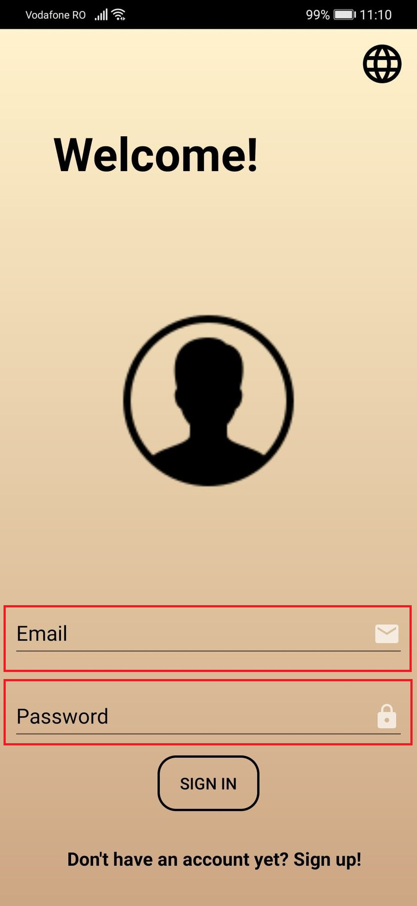
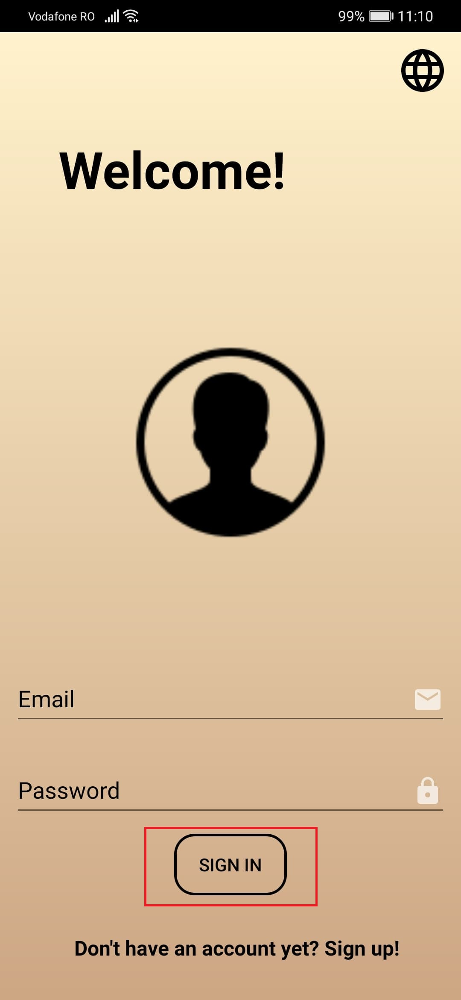

Log in
Wenn ein Benutzer auf die Anwendung zugreift, wird diese automatisch eingegeben auf der Anmeldeseite. Die Anmeldeseite enthält zwei Felder: E-Mail und Passwort .
Geben Sie in die genannten Felder die Anmeldeinformationen für jedes Feld ein und klicken Sie dann auf die Schaltfläche Sich Eintragen.
Der Benutzer wird dann zur KATALOG-Seite innerhalb der Anwendung weitergeleitet.
Wenn der Benutzer noch kein Konto erstellt hat, klicken Sie auf die Schaltfläche "Anmelden!" , um zur Seite Konto erstellen weiterzuleiten.